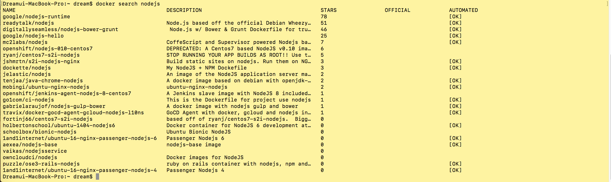
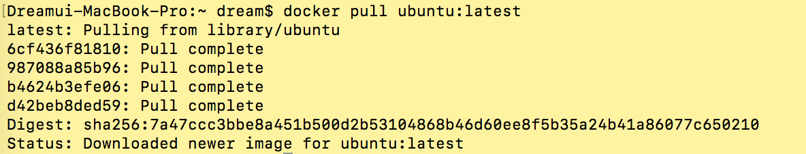
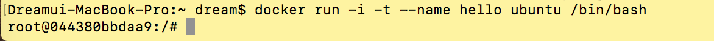
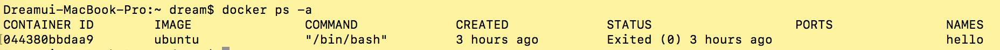
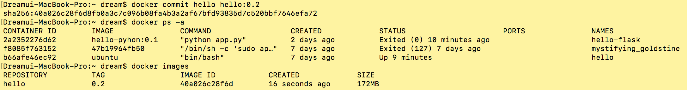
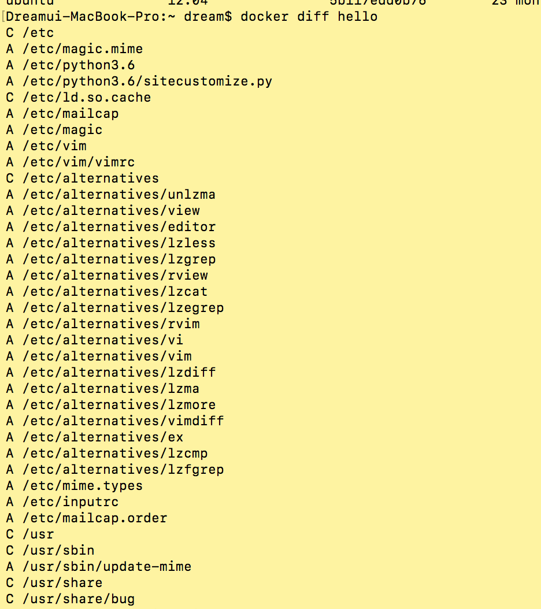
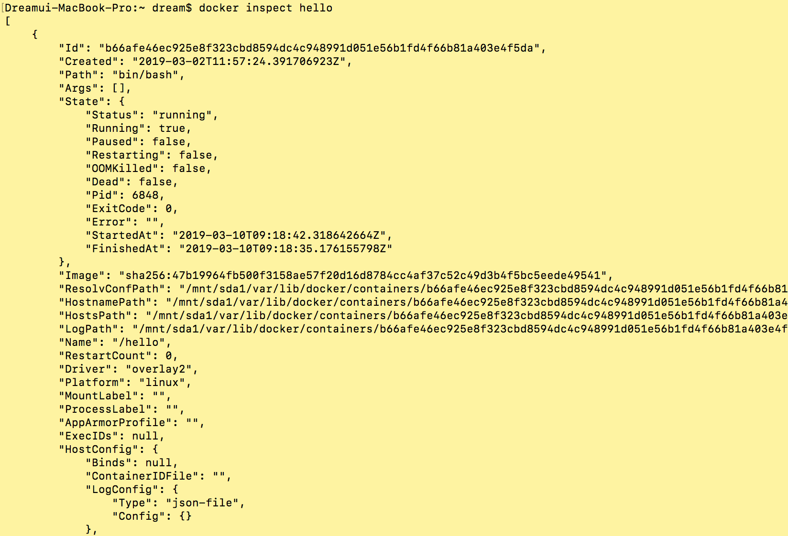

$ docker --version
$ docker search nodejs
$ docker pull ubuntu:latest

$ docker images / docker image ls

$ docker run -i -t --name hello ubuntu bin/bash

$ docker ps -a / docker container ls

$ docker start hello
$ docker restart hello
$ docker attach hello
$ docker exec hello echo "Hello World"
$ docker stop hello
$ docker rm hello
$ docker rm hello
$ mkdir dockerFile
# 아래와 같은 Docker file을 생성
# Use an official Python runtime as a parent image
FROM python:2.7-slim
# Set the working directory to /app
WORKDIR /app
# Copy the current directory contents into the container at /app
COPY . /app
# Install any needed packages specified in requirements.txt
RUN pip install --trusted-host pypi.python.org -r requirements.txt
# Make port 80 available to the world outside this container
EXPOSE 80
# Define environment variable
ENV NAME World
# Run app.py when the container launches
CMD ["python", "app.py"]
# requirements.txt
Flask
Redis
# app.py
rom flask import Flask
from redis import Redis, RedisError
import os
import socket
# Connect to Redis
redis = Redis(host="redis", db=0, socket_connect_timeout=2, socket_timeout=2)
app = Flask(__name__)
@app.route("/")
def hello():
try:
visits = redis.incr("counter")
except RedisError:
visits = "<i>cannot connect to Redis, counter disabled</i>"
html = "<h3>Hello {name}!</h3>" \
"<b>Hostname:</b> {hostname}<br/>" \
"<b>Visits:</b> {visits}"
return html.format(name=os.getenv("NAME", "world"), hostname=socket.gethostname(), visits=visits)
if __name__ == "__main__":
app.run(host='0.0.0.0', port=80)
# Dockerfile이 저장된 디렉터레에서 다음의 명령을 실행합니다.
# docker build <옵션> <Dockerfile 경로> 형식
$ docker build --tag hello-python:0.1 .
$ docker run --name hello-flask -d -p 4000:80 hello-python:0.1
$ docker history hello:0.1
$ docker cp hello-nginx:/etc/nginx/nginx.conf ./
실제로 아래와 같이 Docker에서 파일을 가져와 볼 수 있다
$ docker commit -a "Foo Bar <foo@bar.com>" -m "add hello.txt" hello-nginx hello:0.2

$ docker diff hello

$ docker inspect hello

# DB Conatiner의 이름은 db로 설정하였음
$ docker run --name db -d mongo
# docker run 명령에서 연결 옵션은 --link <컨테이너 이름>:<별칭>
$ docker run --name web -d -p 80:80 --link db:db hello-nginx
이제 mongo db에 접속해볼 수 있습니다.
mongodb://db:27017/exampledb
컨테이너 안에서 다른 컨테이너에 접속할 때는 <별칭>:<포트 번호> 형식으로 사용합니다.
# 별칭에 대하여
# docker inspect 명령으로 web 컨테이너의 세부 정보에서 hosts 파일 경로를 구한 뒤 cat 명령으로 내용을 살펴봅니다.
$ cat 'sudo docker inspect -f "{{ .HosePath }}" web'
# db는 --link db:db 에서 설정한 별칭이고, db의 실제 IP는 db container 의 IP 주소로 확인할 수 있다.
$ CMD env | grep _TCP= | \
sed 's/.*_PORT_\([0-9]*\)_TCP=tcp:\/\//(.*\):\(.*\)/socat \
TCP4-LISTEN:\1,fork,reuseaddr TCP4:\2:\3 \&/' \
| sh && top
docker run 명령에서 --link 옵션을 사용하거나 -e EXAMPLE_PORT_1234_TCP=tcp://192.168.0.10:1234 라고 설정해주면 환경 변수에 포트 정보가 설정됩니다.
$ sudo docker pull redis:latest
$ sudo docker run -d --name redis redis:lastest
$ sudo docker run -d --link redis:redis --name redis_ambassador \ -p 6379:6379 svendowideit/ambassador
# -d : 백그라운드로 실행
# --link redis:redis : redis 컨테이너를 redis 별칭으로 연결합니다.
# --name redis_ambassador 옵션으로 컨테이너 이름을 redis_ambassador 저장합니다.
# -p 6379:6379 컨테이너의 6379번 호트와 호스트의 6379 연결하고 외부에 노출한다.
# Docker Hub에 있는 svendowideit/ambassador로 컨테이너를 생성합니다.
$ docker run -d --name redis_ambassador --expose 6379 \ -e REDIS_PORT_6379_TCP=tcp://192.168.0.10:6379 svendowideit/ambassador
# -e REDIS_PORT_6379_TCP 옵션으로 IP주소와 포트를 설정하여 다은 서버에 있는 redis_ambassador 컨테이터와 연결합니다.
$ sudo docker run -i -t --rm --link redis_ambassador:redis relateiq/redis-cli
$ docker run -i -t --name hello-volume -v /data ubuntu bin/bash
$ docker inspect -f "{{ .Volumes }}" hello-volume
$ docker run -i -t --name hello-volume1 -v /root/data:/data ubuntu /bin/bash
$ cd /data
$ touch world
$ exit
$ ls /root/data
000000000
$ docker run -i -t --name hello-volume2 -v /root/data:/data ubuntu /bin/bash
$ docker run -i -t --name hello-volume -v /root/hello.txt:/root/hello/txt ubuntu /bin/bash
$ docker run -i -t --name hello-volume -v /root/hello.txt:/root/hello/txt ubuntu /bin/bash
# 일반 컨테이너를 생성하면서 방금 생성한 hello-volume 데이터 볼륨 컨테이너를 연결합니다.
# 데이터 볼륨 컨테이너를 연결하는 옵션은 --volumes-from <데이터 볼륨 컨테이너>
$ docker run -i -t --volumes-from hello-volume --name hello ubuntu /bin/bash
# /data 디렉터리를 호스트의 특정 디렉토리에 연결하지 않아도 데이터 볼륨 컨테이너로 사용할 수 있다.
$ docker run -i -t --hame hello-volume --name hello ubuntu /bin/bash
sudo usermod -aG docker $USER # 현재 접속중인 사용자에게 권한주기
sudo usermod -aG docker your-user # your-user 사용자에게 권한주기
# dind 폴더 생성 후 아래의 git 경로에서 파일 다운로드
$ git close https://github.com/pyrasis/dind.git
$ cd dind
$ docker build --tag dind .
# Docker Image를 통해서 컨테이너를 생성한다.
# 여기에서 --previleged 옵션은 컨테이너 안에서 호스트의 리눅스 커널 기능을 모두 사용할 수 있도록 해줍니다.
$ docker run run -i -t --previleged dind
# Docker 안의 Root 에서
root$
# host -> dind 컨테이너 -> busybox
$ docker run -i -t busybox:latest /bin/sh